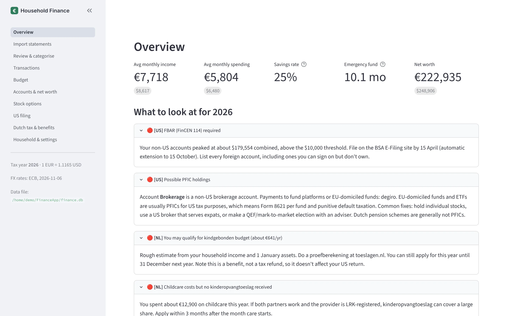
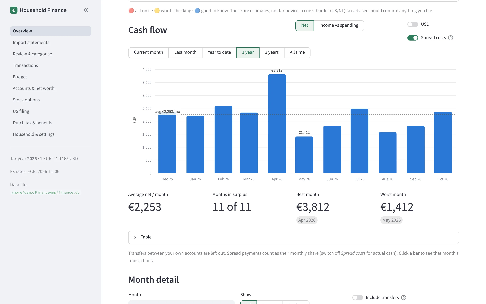
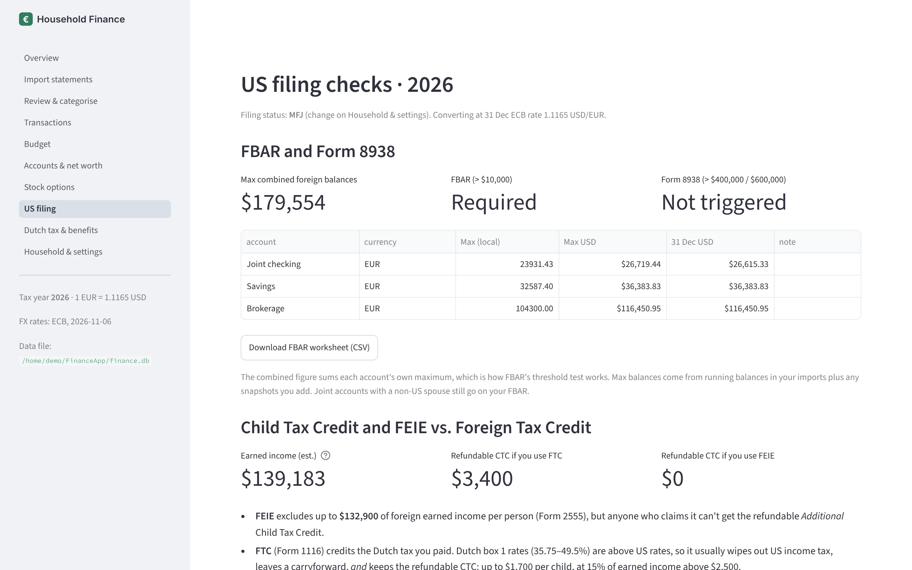
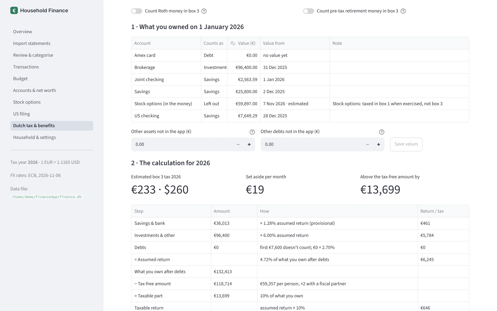
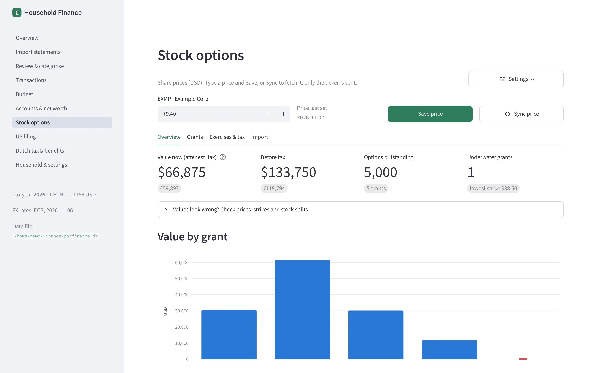
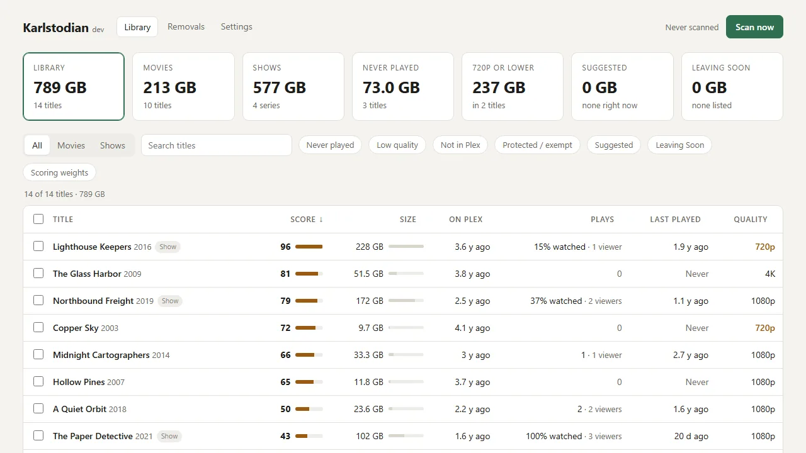
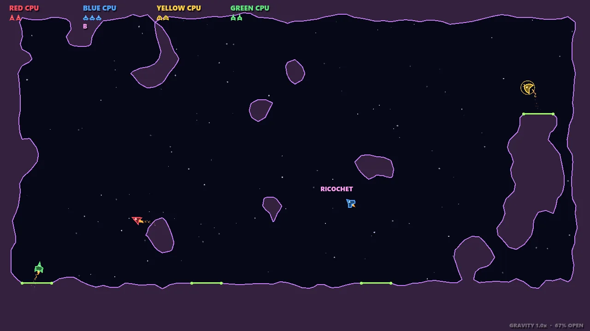

Adyen
2026 → now · Amsterdam
senior software engineer · platform
- Platform engineering. Build and maintain the core systems other Adyen teams build on: feature frameworks, secret management and service registries.
$ whoami
I build the back‑end systems other things depend on.
Senior software engineer in Amsterdam. More than fifteen years in enterprise Java: platform engineering at Adyen today, studio accounting and residuals payments at Netflix, and delivery at Grubhub. In my own time I build things for my family, like a finance app for life as Americans in the Netherlands.
2026 → now · Amsterdam
senior software engineer · platform
2021 → 2026 · Remote (Chicago)
senior software engineer (L5)
2016 → 2021 · Chicago
Estimated, planned and architected client projects while developing full time. Wrote and ran internal training on unit testing and secure code. Vodori Excellence Award.
Java consultant for Fifth Third Bank (grew from junior developer to lead developer and architect, managing an offshore team), PNC, i3, Ingenix and Phototype. Built an Android training program for the company. Then helped open the Tampa office as one of its first three employees.
Supply chain applications and export control in the Commercial division; tech stack documentation and virtualization planning in GE Infrastructure.
main project
A private, local-first finance app for a US family living in the Netherlands. It imports bank statements from both countries, shows budget and net worth in EUR with USD alongside, and builds a checklist of the US and Dutch tax and benefit items that apply.






self-hosted app
Scores every movie and show in my Plex library as a removal candidate, so the disks don't fill up with things nobody watches.

game
A gravity spaceship brawler for up to four players. Your ship has one rear booster, gravity always pulls you down, and one shot kills.
infrastructure
The server this site runs on. Apps run as Docker Compose stacks on Proxmox behind Caddy,
and merging to main deploys them through GitHub Actions. Renovate opens a PR
for each new image version, and a rollback is a revert.
datastax
The best way to reach me is LinkedIn.